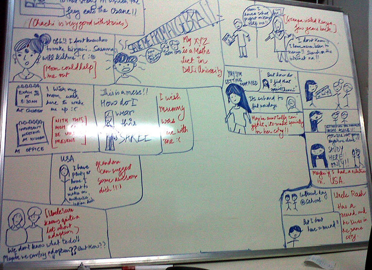

Written by Kenneth on March 6, 2013.
Week 4 was spent with us doing both literature review as well as preliminary user research via personal & telephonic interviews. We found several examples of family tree applications, but none seemed to focus on preserving culture, and heritage. We also spent time with Prof. Vinod Vidwans, who helped us think beyond current technologies and brainstorm on futuristic ideas. It helped us to come out of a narrow mindset and gave us a new direction!
Some of the ideas discussed (Futuristic, impossible to implement) were:
- Wearable Memories: Clothes that record memories. Dresses worn on special events like Anniversaries store special memories
- Holograms for connecting with (geographically) distant family members
- Objects in public spaces that record memories, and allow you to recap them whenever you visit them next
- Cubes for preserving languages and teaching them to next generations
- A box of memories: Like the heirlooms passed on from one generation to another
The last idea appealed to us more, and we decided to spend more time exploring this idea.
The week ended with the three of us attending the Global Service Jam (Bangalore).
Written by Kenneth on February 25, 2013.
Week 3 was mostly spent with us trying to come up with a brief and juggle other assignments.
Lot of preliminary research and mind mapping was done so that we could narrow down our topic slightly.
We gave our pitch to Mr. Nithin Ismail from Microsoft. His feedback was mostly positive, and he also emphasized on not narrowing our ideas based on the final outcome. He wanted to ensure that we don't just restrict to the stories aspect.
Now that our idea has some kind of validation, we began to chart out a plan to execute the research.
Written by Kenneth on February 18, 2013.
Week 1 actually started when we were given the brief. We were not really sure how we would merge it into this semester's Design Project theme 'Culture and Communication'.
The team sat and brainstormed ideas which would use the attributes of both big data and culture.
We spent the first week exploring two themes: Energy conservation for modern homes & Persuasive design for preventing food wastage at cafeterias.

By the end of the first week, we weren't happy with the two ideas and decided to start afresh. We were clear about one thing though, as this project was spread over a longer duration than normal we wanted to follow a proper design process. We were also trying hard to not get narrowed down with the final outcome. We didn't want to just build another app!
As we brainstormed, we kept coming back to the concept of 'families' and 'stories'.
We decided to make this our central theme.